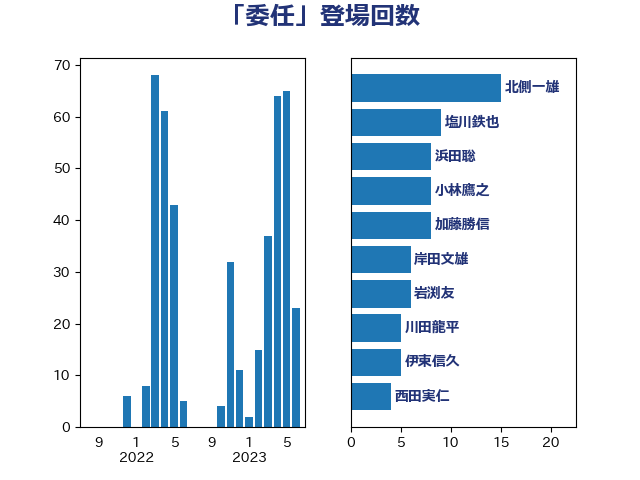

単語「委任」

| 吉川沙織 | 立憲民主党 | 39 回 |
| 塩川鉄也 | 日本共産党 | 11 回 |
| 小林鷹之 | 自由民主党 | 8 回 |
| 山添拓 | 日本共産党 | 7 回 |
| 打越さく良 | 立憲民主党 | 7 回 |
| 小沼巧 | 立憲民主党 | 6 回 |
| 石橋通宏 | 立憲民主党 | 6 回 |
| 笠井亮 | 日本共産党 | 6 回 |
| 岸真紀子 | 立憲民主党 | 5 回 |
| 平井卓也 | 自由民主党 | 5 回 |
| 田村智子 | 日本共産党 | 5 回 |
| 松沢成文 | 日本維新の会 | 4 回 |
| 森山浩行 | 立憲民主党 | 4 回 |
| 浦野靖人 | 日本維新の会 | 4 回 |
| 渡辺周 | 立憲民主党 | 4 回 |
| 倉林明子 | 日本共産党 | 3 回 |
| 前川清成 | 日本維新の会 | 3 回 |
| 北側一雄 | 公明党 | 3 回 |
| 岸田文雄 | 自由民主党 | 3 回 |
| 松野博一 | 自由民主党 | 3 回 |
| 水岡俊一 | 立憲民主党 | 3 回 |
| 清水貴之 | 日本維新の会 | 3 回 |
| 玉木雄一郎 | 国民民主党 | 3 回 |
| 稲富修二 | 立憲民主党 | 3 回 |
| 野田聖子 | 自由民主党 | 3 回 |
| 鈴木俊一 | 自由民主党 | 3 回 |
| 三木圭恵 | 日本維新の会 | 2 回 |
| 下村博文 | 自由民主党 | 2 回 |
| 中野洋昌 | 公明党 | 2 回 |
| 伊藤孝恵 | 国民民主党 | 2 回 |
| 大串博志 | 立憲民主党 | 2 回 |
| 大石あきこ | れいわ新選組 | 2 回 |
| 宮本徹 | 日本共産党 | 2 回 |
| 山岸一生 | 立憲民主党 | 2 回 |
| 山本香苗 | 公明党 | 2 回 |
| 後藤祐一 | 立憲民主党 | 2 回 |
| 徳永エリ | 立憲民主党 | 2 回 |
| 新藤義孝 | 自由民主党 | 2 回 |
| 本庄知史 | 立憲民主党 | 2 回 |
| 本村伸子 | 日本共産党 | 2 回 |
| 杉久武 | 公明党 | 2 回 |
| 森本真治 | 立憲民主党 | 2 回 |
| 櫻井周 | 立憲民主党 | 2 回 |
| 白石洋一 | 立憲民主党 | 2 回 |
| 篠原豪 | 立憲民主党 | 2 回 |
| 自見はなこ | 自由民主党 | 2 回 |
| 落合貴之 | 立憲民主党 | 2 回 |
| 赤嶺政賢 | 日本共産党 | 2 回 |
| 青柳仁士 | 日本維新の会 | 2 回 |
| 音喜多駿 | 日本維新の会 | 2 回 |
| おおつき紅葉 | 立憲民主党 | 1 回 |
| 中司宏 | 日本維新の会 | 1 回 |
| 伊佐進一 | 公明党 | 1 回 |
| 伊東良孝 | 自由民主党 | 1 回 |
| 伊波洋一 | 無所属 | 1 回 |
| 伊藤渉 | 公明党 | 1 回 |
| 加藤勝信 | 自由民主党 | 1 回 |
| 北神圭朗 | 無所属 | 1 回 |
| 古川禎久 | 自由民主党 | 1 回 |
| 坂本哲志 | 自由民主党 | 1 回 |
| 大口善徳 | 公明党 | 1 回 |
| 大岡敏孝 | 自由民主党 | 1 回 |
| 奥野総一郎 | 立憲民主党 | 1 回 |
| 安江伸夫 | 公明党 | 1 回 |
| 宮崎政久 | 自由民主党 | 1 回 |
| 小池晃 | 日本共産党 | 1 回 |
| 小沢雅仁 | 立憲民主党 | 1 回 |
| 山下貴司 | 自由民主党 | 1 回 |
| 山田宏 | 自由民主党 | 1 回 |
| 岩渕友 | 日本共産党 | 1 回 |
| 川合孝典 | 国民民主党 | 1 回 |
| 川田龍平 | 立憲民主党 | 1 回 |
| 後藤茂之 | 自由民主党 | 1 回 |
| 徳永久志 | 立憲民主党 | 1 回 |
| 斎藤嘉隆 | 立憲民主党 | 1 回 |
| 杉尾秀哉 | 立憲民主党 | 1 回 |
| 柚木道義 | 立憲民主党 | 1 回 |
| 武田良太 | 自由民主党 | 1 回 |
| 浅野哲 | 国民民主党 | 1 回 |
| 浜田聡 | NHK党 | 1 回 |
| 清水真人 | 自由民主党 | 1 回 |
| 湯原俊二 | 立憲民主党 | 1 回 |
| 熊谷裕人 | 立憲民主党 | 1 回 |
| 田島麻衣子 | 立憲民主党 | 1 回 |
| 石川博崇 | 公明党 | 1 回 |
| 福島みずほ | 社会民主党 | 1 回 |
| 福田昭夫 | 立憲民主党 | 1 回 |
| 竹内真二 | 公明党 | 1 回 |
| 舟山康江 | 国民民主党 | 1 回 |
| 船田元 | 自由民主党 | 1 回 |
| 若林健太 | 自由民主党 | 1 回 |
| 菅家一郎 | 自由民主党 | 1 回 |
| 菅義偉 | 自由民主党 | 1 回 |
| 葉梨康弘 | 自由民主党 | 1 回 |
| 西岡秀子 | 国民民主党 | 1 回 |
| 豊田俊郎 | 自由民主党 | 1 回 |
| 赤羽一嘉 | 公明党 | 1 回 |
| 足立康史 | 日本維新の会 | 1 回 |
| 金子恭之 | 自由民主党 | 1 回 |
| 鈴木庸介 | 立憲民主党 | 1 回 |
| 阿部司 | 日本維新の会 | 1 回 |
| 高良鉄美 | 無所属 | 1 回 |